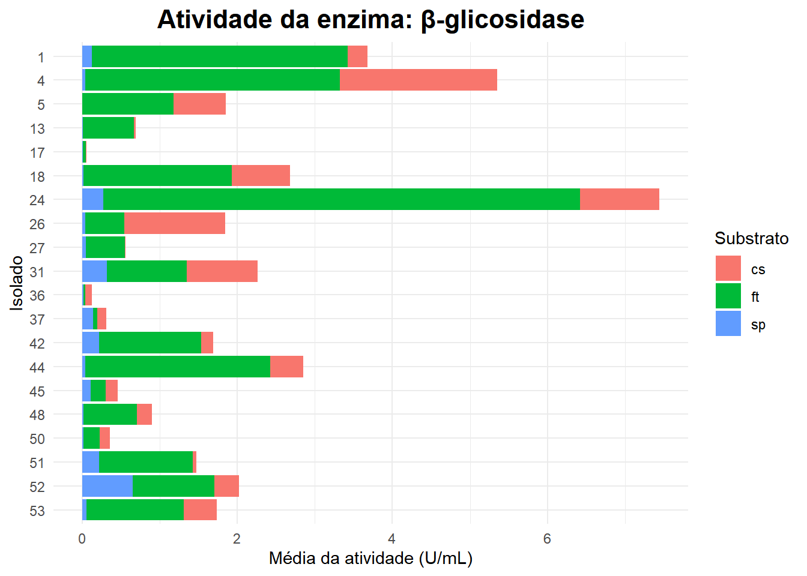
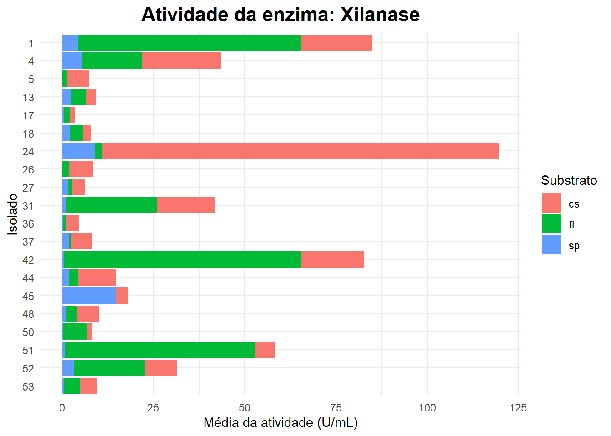
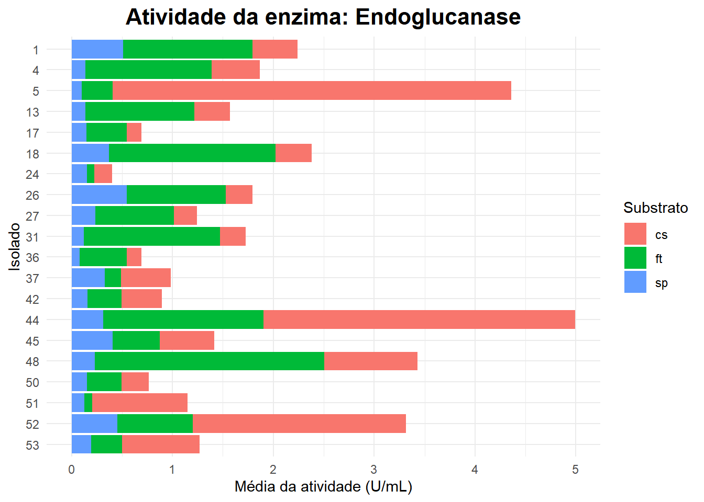
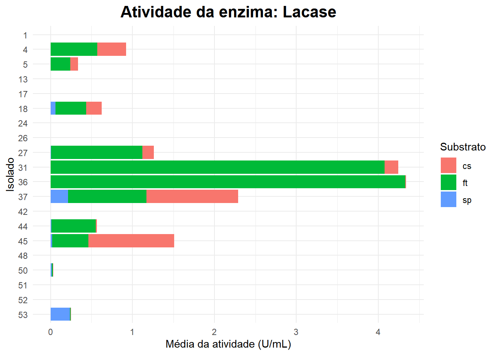
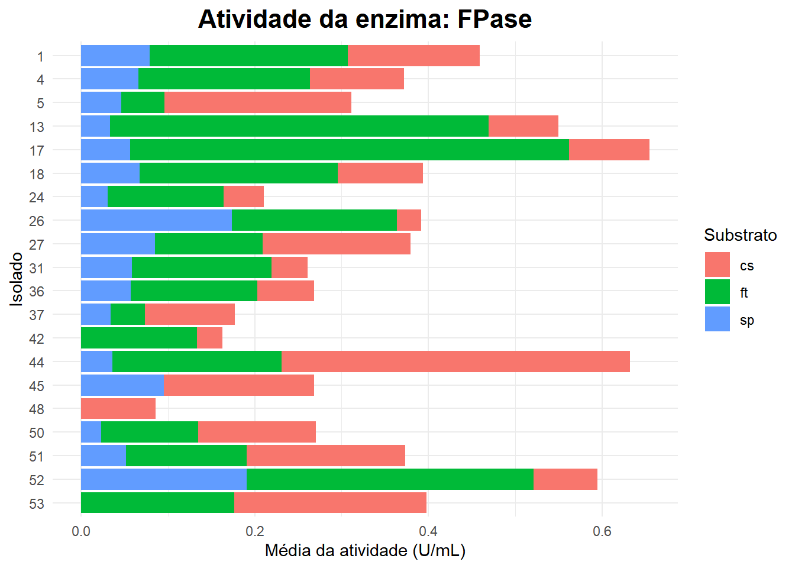
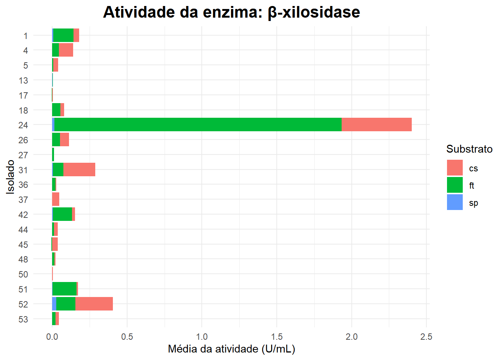
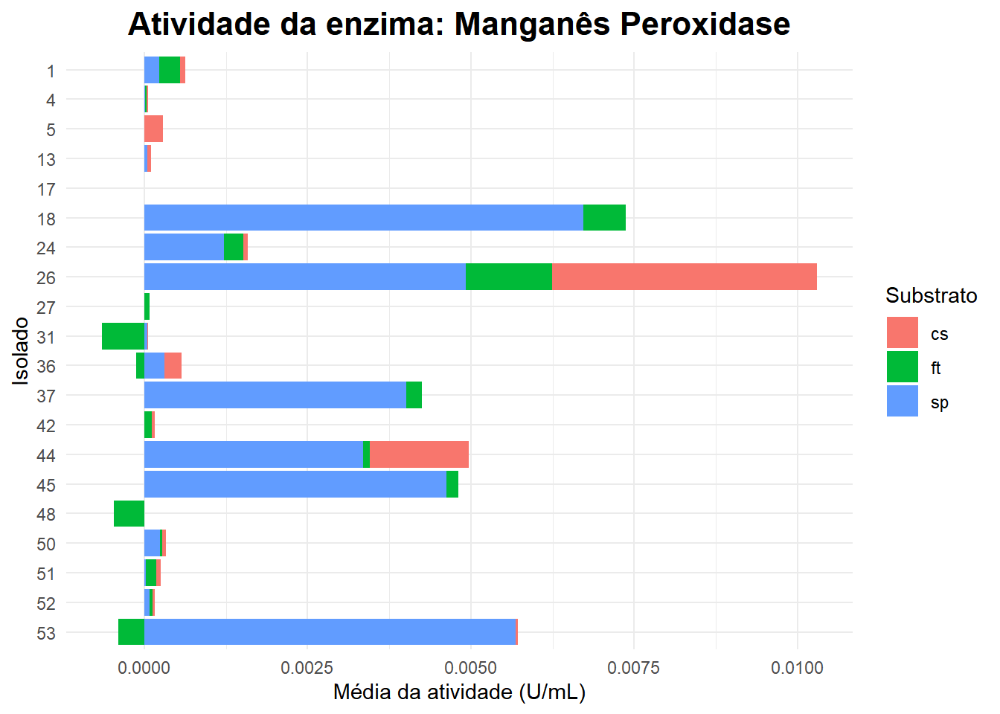

── Attaching core tidyverse packages ──────────────────────── tidyverse 2.0.0 ──
✔ dplyr 1.1.4 ✔ readr 2.1.5
✔ forcats 1.0.0 ✔ stringr 1.5.1
✔ ggplot2 3.5.2 ✔ tibble 3.2.1
✔ lubridate 1.9.4 ✔ tidyr 1.3.1
✔ purrr 1.0.4
── Conflicts ────────────────────────────────────────── tidyverse_conflicts() ──
✖ dplyr::filter() masks stats::filter()
✖ dplyr::lag() masks stats::lag()
ℹ Use the conflicted package (<http://conflicted.r-lib.org/>) to force all conflicts to become errors
library(forcats)library(emmeans)
Welcome to emmeans.
Caution: You lose important information if you filter this package's results.
See '? untidy'
# Carregar os dados previamente salvos pelo arquivo estatisticas.qmdload("estatisticas_base.RData")# Verificar as enzimas disponíveisenzimas <-unique(dados$enzima)# Dicionário de nomes completos das enzimasnomes_enzimas <-c(bgli ="β-glicosidase",xil ="Xilanase",endog ="Endoglucanase",lac ="Lacase",fpa ="FPase",bxil ="β-xilosidase",mangper ="Manganês Peroxidase")
🧪 Gráficos de Atividade Enzimática
# Loop para gerar um gráfico por enzimafor (enz in enzimas) { subdados <- dados %>%filter(enzima == enz) %>%filter(!is.na(atividade), !is.nan(atividade), !is.infinite(atividade))if (nrow(subdados) <3) next nome_completo <- nomes_enzimas[[tolower(enz)]]if (is.null(nome_completo)) nome_completo <- enz grafico <- subdados %>%group_by(isolado, substrato) %>%summarise(media =mean(atividade, na.rm =TRUE),.groups ="drop" ) %>%ggplot(aes(x = media, y = forcats::fct_rev(isolado), fill = substrato)) +geom_col() +labs(title =paste("Atividade da enzima:", nome_completo),x ="Média da atividade (U/mL)",y ="Isolado",fill ="Substrato" ) +theme_minimal() +theme(plot.title =element_text(hjust =0.5, size =16, face ="bold"),legend.position ="right" )print(grafico)}







🏆 Top 3 Isolados por Enzima
melhores_isolados <- dados %>%group_by(enzima, isolado) %>%summarise(media_atividade =mean(atividade, na.rm =TRUE), .groups ="drop") %>%arrange(enzima, desc(media_atividade)) %>%group_by(enzima) %>%slice_head(n =3)knitr::kable( melhores_isolados,caption ="Top 3 isolados com maior média de atividade por enzima",digits =2)
Top 3 isolados com maior média de atividade por enzima
enzima
isolado
media_atividade
bgli
24
2.48
bgli
4
1.78
bgli
1
1.23
bxil
24
0.80
bxil
52
0.14
bxil
31
0.10
endog
44
1.66
endog
5
1.45
endog
48
1.14
fpa
17
0.22
fpa
44
0.21
fpa
52
0.20
lac
36
1.45
lac
31
1.41
lac
37
0.76
mangper
26
0.00
mangper
18
0.00
mangper
53
0.00
xil
24
39.93
xil
1
28.29
xil
42
27.53
✅ Conclusões
As análises revelaram diferenças marcantes entre isolados e substratos.
Os três melhores isolados por enzima foram identificados com base na média de atividade, o que ajuda a selecionar os candidatos mais promissores.
As informações aqui apresentadas podem embasar recomendações práticas para biodegradação de tocos com consórcios enzimáticos.